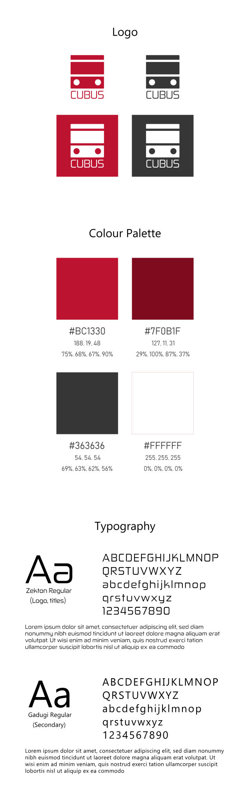

Envisioning a new way to move around the city.
The application of modularity in vehicles
OVERVIEW
Modular & Autonomous vehicles create a unique and efficient method of transportation in Toronto
This is Cubus
The following information is about the design process of this transit system, including each step from concept to the final design and all the challenges that were faced during Cubus development.
INTERVIEW + RESEARCH
Cubus is a project that was developed to minimize the impact of a common issue among people's experience in Toronto's public transportation: the inefficiency of buses and trains. The initial phase was to conduct interviews in order to understand what are the major complaints that users have with the current system.
56 people were interviewed about the Toronto Transit Commission (TTC).
Some of the questions included:
- How often do you use the TTC?
- How satisfied are you with the TTC experience?
The questions above were purposefully simple with the objective of gathering the overall percentage of TTC riders and their satisfaction with Toronto's buses and trains. A questionnaire was also used to get more specific information about their desires, needs, and service complaints.
Inefficient, crowded & slow public transportation:
A frustrating experience for TTC users
The majority of users listed inefficiency, overcrowdedness, and slowness as their main problems with the current transportation system. It was revealed that they desire more available buses on the streets and less crowded vehicles in order to get a comfortable ride experience.
With the data collected from the interviews, we began a more in-depth research process to obtain information about the situation of TTC buses. Innumerous sources stated that the problem with the TTC is real and that a large number of users are unsatisfied with the provided service. CityNews reported on their website that many buses & streetcars routes around Toronto are overcrowded.
In addition to the research, personas were created based on the common responses by interviewees.


CONCEPT
After gathering all the information from the research and interviews, we were faced with the challenge: How can we solve or minimize the problem experienced by the TTC users? What are the major aspects that should be the focus of our solution?
The brainstorming phase began and a diverse range of conceptual systems was proposed. Since the results revealed that the problems of buses & streetcars are the most common complaint, the concepts were targeting street transportation as opposed to trains.
The initial sketches of the selected transit system were created: a modular & autonomous vehicle that adapts to the needs of the city and users.
Sketches of the selected transportation concept
The importance of understanding and visualizing an idea in motion
The next step was to create a quick render of the vehicles to have a better visualization of the system and understand how users interact & move between modules. This early stage was focusing on the functionality rather than the visual aspects of the bus.

Quick render in Autodesk Maya
With the definition of our concept and tools to visualize the transportation system, the name for this cubic vehicle was selected: Cubus (Cube + bus).
DESIGN
At this phase of the project, we began to create the visual identity of Cubus. In addition, the dimensions of the modules and their general specifications were defined:
- Each Cubus has a width, length and height of 2.6m (8.5ft)
- It has 8 seats and a capacity of 16 individuals (8 seated and 8 standing)
- The colours of the vehicles and logos were selected to have a similar feel to the current TTC palette: a contrast of reds, white and dark grey
- A panel that displays the destination of each Cubus
Cubus visualization:


Render of a Cubus
The logo, colour palette & typography were also defined in order to have a consistent brand:

RESULT
A lot of assets were produced to visualize our solution for the streets of Toronto. The branding was finalized and Cubus began to have its own identity. One of the design goals was to produce a video showcasing the modular buses in action. The animation was developed with Maya & After Effects.
Below are some of the renders and a physical model created for this project:


Improving the situation of public transportation
Current public transportation systems have the issue of being overcrowded on innumerous occasions. In addition, many TTC users revealed the problem of long wait times for buses and streetcars. Since Cubus is a modular vehicle, it allows itself to expand based on the needs of that specific location, time and number of riders.
When modules connect to each other, Cubus capacity increases allowing more people to go inside. This factor contributes to shorter wait times and a better ride experience for the passengers. The modularity of this system permits individuals to move between each vehicle and select the one that corresponds with their desired route/destination. All modules are fully autonomous in order to prevent human error and guarantee a safe journey for the passengers and pedestrians.
- Final considerations:
Since the initial phase I had a great experience with the development of this project. Some challenges were faced due to our scope (considering the budget & time) and a lot of research had to be made to understand the possibilities, limitations & specifications of vehicles on the streets.
However, the challenges were overcome and this work with Cubus also resulted in a learning experience to expand our knowledge about designing for a large target audience.
YOU MAY ALSO LIKE